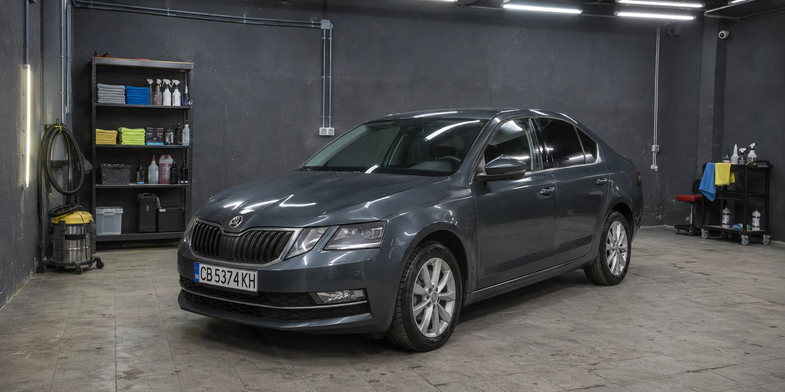

Полировка кузова
Коррекция мелких царапин и следов моек. Подбираем степень полировки по состоянию покрытия.
от 14 900 ₽Рассчитать
DETAIL WORKS / СТУДИЯ ДЕТЕЙЛИНГА
Восстанавливаем блеск кузова, защищаем покрытие и возвращаем чистоту салону. Для автомобилей, на которых вы ездите каждый день.

Сравните состояние кузова до и после коррекции покрытия. Перемещайте ползунок, чтобы увидеть изменение.
От восстановления внешнего вида до защиты наиболее уязвимых зон. Выберите то, что нужно вашему автомобилю.
Коррекция мелких царапин и следов моек. Подбираем степень полировки по состоянию покрытия.
Защитный состав после подготовки кузова: более простой уход и выразительный блеск.
Прозрачная плёнка на капот, бампер, крылья и другие уязвимые элементы.
Очистка ткани, кожи и пластика с учётом состава материалов и загрязнений.
Начальная стоимость помогает сориентироваться. Итоговый объём определяется после осмотра автомобиля.
Понятная последовательность от оценки до готового автомобиля.
Определите, что беспокоит: царапины, тусклый лак, загрязнения или необходимость защиты. Подготовьте фотографии автомобиля.
Учитываем состояние автомобиля, выбираем подходящие услуги и согласуем стоимость и сроки.
Выполняем согласованный уход, проверяем результат и объясняем, как сохранить его дольше.
Каждый автомобиль требует своего подхода. Важен не класс машины, а состояние поверхностей и нужный владельцу результат.
Начинаем с осмотра лака, пластика и материалов салона.
Выбираем средства и инструменты под конкретную поверхность.
Обсуждаем задачу, объём работ и особенности дальнейшего ухода.
Коротко о том, что важно знать перед детейлингом.
Мелкие царапины, потеря блеска и мутные отражения — повод проверить лакокрасочное покрытие. После осмотра можно определить подходящую степень коррекции.
Обычно от одного дня в зависимости от услуги, размера автомобиля и состояния материалов. Точный срок согласуется после осмотра.
Да. Подготовка и выбор защитного покрытия зависят от состояния кузова и того, какие зоны важно защитить.
Для зон, подверженных сколам, подходит прозрачная защитная плёнка. Площадь оклейки подбирается индивидуально.
Рекомендации зависят от выполненного комплекса. Для покрытий особенно важно соблюдать правила мойки и ухода.
Стоимость зависит от размера автомобиля, загрязнений, состояния покрытия и выбранного объёма работ. Калькулятор даёт предварительный ориентир.
Выберите услуги и тип автомобиля, чтобы получить предварительную оценку бюджета.
Выберите одну или несколько услуг.
Расчёт ориентировочный, без отправки заявки.